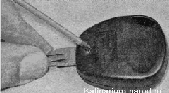
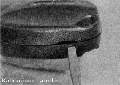
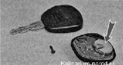

Замена элемента питания пульта дистанционного управленияДля питания пульта используется элемент типа CR2032. Нажимаем любую из кнопок пульта управления. При этом должен кратковременно загореться индикатор на пульте. Если индикатор не загорелся или загорелся двумя короткими вспышками, необходимо заменить элемент питания. Последовательность выполнения 1. Крестовой отверткой с тонким лезвием отворачиваем саморез, стягивающий две части корпуса пульта.  2. Шлицевой отверткой, вставив ее лезвие в паз, разделяем части корпуса пульта. 
3. Извлекаем сменный элемент питания и устанавливаем новый, соблюдая полярность, указанную на держателе элемента питания. 4. Сжимаем части корпуса пульта до защелкивания фиксаторов. После чего заворачиваем саморез. |